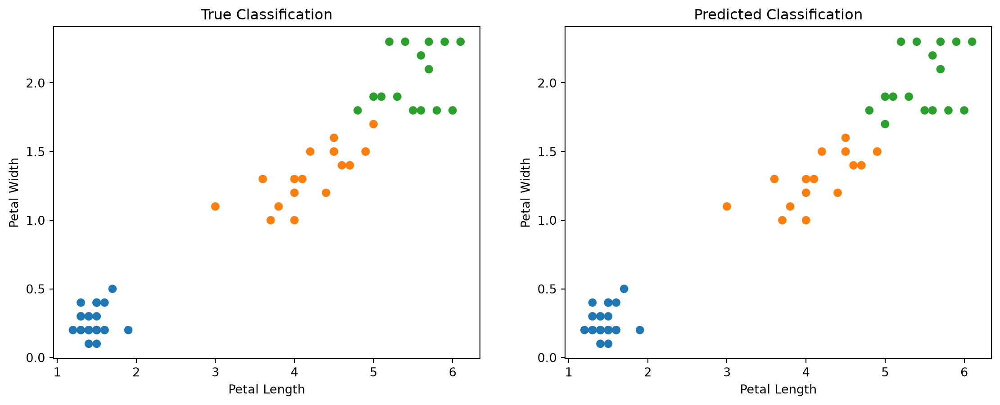
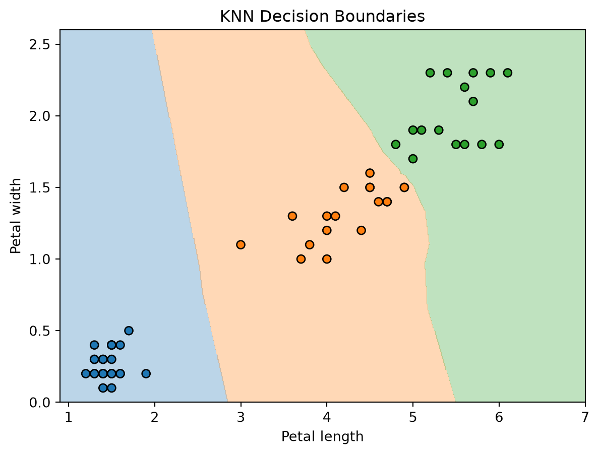
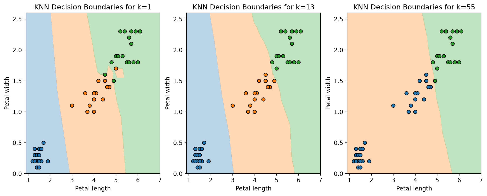

from sklearn.neighbors import KNeighborsClassifier
from sklearn.datasets import load_iris
from sklearn.model_selection import train_test_split
import numpy as np
import matplotlib.pyplot as pltAn Introduction to KNN Classifiers
A Very, Very Toy Example
Suppose for a moment that you have some data on flower petals (as you do). Specifically, the data available to you include the length and width of a petal along with the type of flower it belongs to. Here’s your very representative data set:
| Length (cm) | Width (cm) | Flower Type |
|---|---|---|
| 10.2 | 6.3 | A |
| 6.4 | 3.2 | B |
| 3.7 | 2.0 | C |
| 10.1 | 5.9 | ? |
Now imagine you have the length and width of an unidentified flower petal: 10.1 cm and 5.9 cm, respectively. Using the data that we have in the table above, would you say this petal likely came from a type A, type B or type C flower?
Who’s Closer – KNN De-mystified
One way we could approach this is to compare this unclassified data point with data points we have already classified. We know that one class A flower petal has length 10.2 cm and width 6.3 cm, and this is fairly close to our unknown flower, so by a proximity argument, it’s reasonable to assume that this unidentified flower petal belongs to a class A flower.
What we essentially just did is run a short \(k\)-nearest neighbors (KNN) algorithm to classify this unknown data point with \(k = 1\): we compared how far this new data point was from known data points, focused on its k-nearest data point neighbors, and classified it as the majority class amongst its k-nearest neighbors.
From Intuition to Math
Some Quick Notation
Now that we have some intuition behind the KNN algorithm, let’s formalize it with a bit of math. Let our unknown data point’s features be \(\vec{x}\). In our toy example above, \(\vec{x}\) would contain the length and width of the flower petal. Let’s also suppose we have a set of n labeled data points
\[ D = \{(\vec{x}_i, y_i)\}_{i=1}^{n} \] where each \(\vec{x}_i\) represents the features of a data point and each \(y_i\) is the label/class of \(\vec{x}_i\). This is our training set, \(D\).
What Does Nearer Mean?
Now that we have established some notation, you may have noticed that we’ve been throwing around the term “nearer” or “closer” a lot. But what does it really mean for data points to be close to each other? The most intuitive way to define this distance is with a Euclidean definition, that is, the spatial distance between two datapoints \(\vec{x}\), \(\vec{v} \in \mathbb{R}^n\) is given by
\[ d(\vec{x}, \vec{v}) = \sqrt{\sum_{i=1}^{n}{(x_i - v_i)^2}} \] where \(\vec{x}_i\) and \(\vec{v}_i\) are the \(i^{th}\) components of \(\vec{x}\) and \(\vec{v}\) respectively.
But Euclidean distance isn’t the only formulation of distance that exists! There are plenty of other distance metrics that we can use to define the distance between two points in n-dimensional space. For example, consider this metric called Manhattan distance:
\[ d(\vec{x}, \vec{v}) = \sum_{i=1}^{n}{|{x_i - v_i}|} \] In two dimensions, an intuitive way to think about Manhattan distance is the distance you would need to travel from point A to B if you could only move up/down and left/right. Another important distance metric is Minkowski distance:
\[ d_p(\vec{x}, \vec{v}) = (\sum_{i=1}^{n}{|{x_i - v_i}|^p})^{1/p} \] Here, \(p\) is typically called the Minkowski parameter. The larger \(p\) is, the more the total distance is dominated by larger component-wise differences. Notice that when \(p=1\) and \(p=2\), the Minkowski metric reduces to Manhattan and Euclidean distance, respectively.
The KNN Algorithm
Now that we have established some notation and a couple ways to think about distance, here is the full KNN algorithm:
- Pick a \(k\) value. This \(k\) value will determine how many of the nearest data points we will consider when deciding how to label the new data point \(\vec{x}\)
- Calculate the distance \(d(\vec{x}, \vec{x}_i)\) for each \(\vec{x}_i \in D\)
- Consider the \(k\)-closest neighbors \(\vec{x}_i\) to \(\vec{x}\) and their respective labels \(y_i\). Find the most frequent label among \(\vec{x}_i\)’s \(k\)-closest neighbors. Call this label \(\hat{y}\)
- Classify \(\vec{x}\) with the label \(\hat{y}\)
Scikit-learn’s KNN
Luckily, scikit-learn has a KNN classifier that we can import and use; we will use this to classify flowers based off their petal measurements. Here’s how we can build a simple KNN using scikit-learn
We will first need to import a couple modules to access scikit-learn’s KNN classifier, to load in some data to work with (flower petal data), to split our data into training and test sets, and to acccess some methods that will make plotting easier.
Next, we load in the data and split it into a training and test set. The iris data contains data on the sepal length and width and the petal length and width of a flower, but to make things simple, we will only use petal length and width; this will also make visualizing the predictions easier later on.
# loading in flower data
iris_data = load_iris()
# we will only look at petal length and width so we can visualize the predictions on a nice 2d plot later on
X = iris_data.data[:, 2:]
y = iris_data.target
random_seed = 12
# splitting our data into a training set and test set
X_train, X_test, y_train, y_test = train_test_split(X, y, test_size=0.4, random_state=random_seed)With our data processed, we can now instantiate and fit our KNN classifier. We’ll pick a k value of 5 for no particular reason. Fitting the model here is essentially just storing the data points.
# instantiating our KNN classifier with k=5
model = KNeighborsClassifier(n_neighbors=5)
# fitting our KNN classifier with our training data, i.e., essentially storing the training data
model.fit(X_train, y_train)With the model fitted to our training data, we can now make predictions! If we pass in our test data, or unknown data points, we can get label predictions. Using KNeighborsClassifier’s score method, we can see that the accuracy of those predictions is about 98.3%
# printing out the accuracy of our KNN model in classifying the test set
print(model.score(X_test, y_test))0.9833333333333333Let’s plot the data points and color them according to their labels to get a sense of what our KNN classifier is doing. We can call the classifiers built in predict method to get predicted labels.
# color list to color scatterplot points by label
colors = np.array(['#1f77b4', '#ff7f0e', '#2ca02c'])
# getting label predictions from our KNN model
preds = model.predict(X_test)
# plotting prediction labels and true labels side by side
plt.figure(figsize=(14, 5))
plt.subplot(1, 2, 1)
plt.scatter(X_test[:, 0], X_test[:, 1], c=colors[y_test])
plt.xlabel("Petal Length")
plt.ylabel("Petal Width")
plt.title("True Classification")
plt.subplot(1, 2, 2)
plt.scatter(X_test[:, 0], X_test[:, 1], c=colors[preds])
plt.xlabel("Petal Length")
plt.ylabel("Petal Width")
plt.title("Predicted Classification")
plt.show()
The left scatterplot shows each data point according to their true label, and on the right, we have the data points colored according to their predicted label. We can see that the plots are pretty much identical, except for one point towards the top right. We can also plot something called a decision-boundary plot to show how any potential data point will be labeled

If a data point falls within a specific color region, our KNN model will classify it as the corresponding class. And of course, changing our \(k\) parameter changes how our KNN classifier makes decisions.

Notice the small isolated patch of orange in the green region for the \(k=1\) plot; choosing too small a k value will accentuate oddities in the training data. On the other hand, notice how no data point will ever be labeled with the blue class on the \(k=55\) plot. This is because picking too large a k value will result in the majority classes dominating. So while there may be no correct value of k to use, some are definitely better than others.
Conclusion
Even though we used a relatively simple dataset here, KNN classifiers are very powerful models that utilize the geometry of known data points to make classification predictions. As a recap, to build your own KNN classifier with scikit-learn, remember to:
- Load in your data and separate the data features from the data labels. Remember to create a training set and a testing set.
- Instantiate a KNeighborsClassifier object and specify a \(k\) value with the kwarg n_neighbors (remember that this \(k\) value affects the classifier’s behavior)
- Fit the classifier with your training data by calling the classifier’s fit method
- Make predictions with the predict method
Try it out! Pick an appropriate dataset you want to work with and see what you can do. Mess around with different \(k\) values and see how your model’s behavior changes. We’ve only skimmed the surface of KNN models and there’s a lot to be learned by playing around with these models!